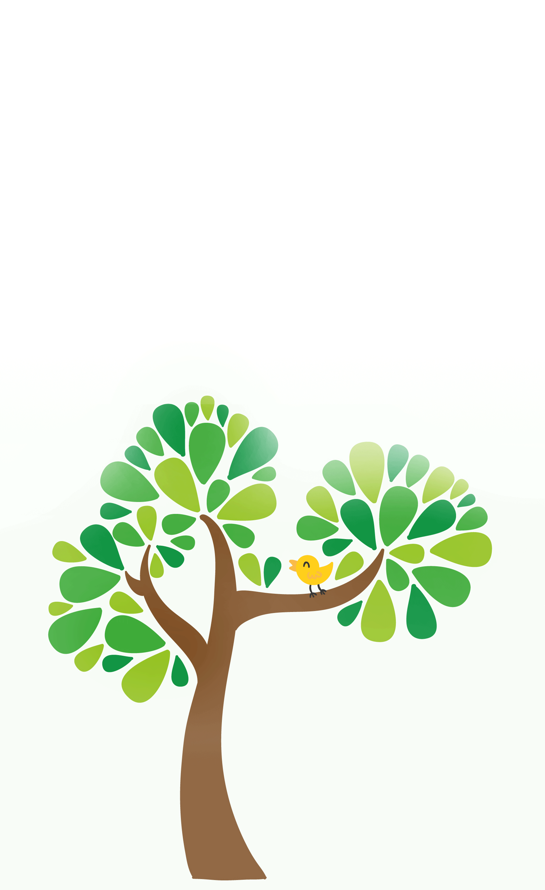

<ion-header no-border color="primary">
  <ion-toolbar color="primary">
    <ion-buttons slot="start">
      <ion-menu-toggle>
        <ion-button>
          <ion-icon slot="icon-only" name="menu"></ion-icon>
        </ion-button>
      </ion-menu-toggle>
    </ion-buttons>
    <ion-title>
      <span style="font-weight:normal">BlueBike</span>
    </ion-title>
  </ion-toolbar>
</ion-header>

<ion-content padding style="background: none transparent;">
  
</ion-content>